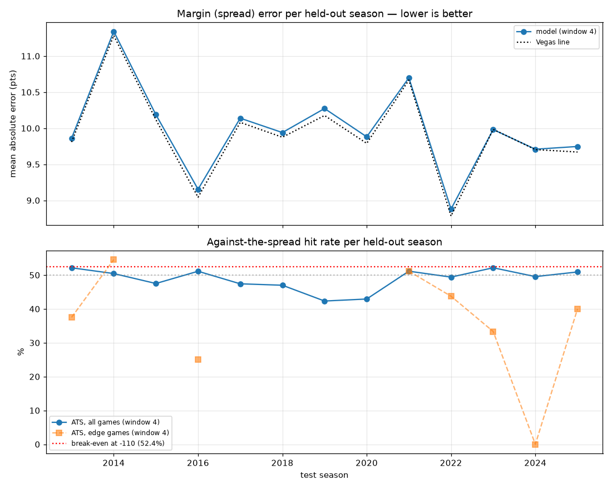

Updated every Tuesday and before Thursday Night Football — predictions for every remaining game
Machine learning ensemble trained on the last four completed seasons plus the season in progress. Every game scored, spreads and totals derived automatically.
Important — This is a statistical model for informational and entertainment purposes only. It is not financial or betting advice. A lean (“edge”) is shown only when the model and the Vegas line differ by at least 3 points and confidence is MEDIUM or higher. Through week 10 of 2026 the model was less accurate than the Vegas line itself — see Performance.
Edge signals onlyShow all weeks
Loading predictions…
Backtest Results Results
Accuracy measured on seasons the model was never trained on — the same process used for 2026 predictions.
The bar to clear is the Vegas line. Every error figure is shown next to the error of simply using the betting line as the prediction; a model that cannot beat it has no edge. Spread record (all games) — the model “picks” the side its predicted margin favours against the line, in every game. Edge games — only games where model and line differ by 3+ points (the leans shown on the Predictions page). At standard −110 odds 52.4% breaks even; over one season the noise is roughly ±3 percentage points, so single-season hit rates prove little.
Margin (spread) error by season — model vs. Vegas line
Edge-game hit rate against the spread (%) — 52.4% breaks even
Average prediction error by game type
Deep validation — walk-forward simulation
one held-out season per fold (2013 onward), each trained only on the 4 seasons before it · full results ↗
Walk-forward slides the training window across history: train on the four seasons before X, predict season X, repeat until today, and compare every season with the Vegas line. Seasons touched by the 2020 no-fans season are flagged because home-field advantage collapsed that year.
Model vs. Vegas error and spread hit rate per held-out season (regenerated on every walk-forward run)

Live Performance
2026 season predictions vs. actual results, tracked in real time.
Margin (spread) error by week — model vs. Vegas line
By confidence tier — a useful confidence score would show lower error for HIGH
Tier
Games
Margin error
Total error
Spread record %
By model version — v1.1 = before the November 2026 audit
Version
Games
Margin error (Vegas)
Spread record
Edge games
Recent results
Week
Matchup
Predicted
Actual
Total score error
Spread pick
Total pick
Confidence
Methodology
How the model is built, what data it uses, and how it is validated.
Overview
How the model is run, what data it trains on, and how it updates automatically.
Every Tuesday during the NFL season, a GitHub Actions pipeline retrains a stacked ensemble on a rolling window of the last four completed seasons plus the season in progress (~1,100–1,300 labeled games) and publishes predictions for every remaining game; a Wednesday-night refresh re-predicts with the latest lines before Thursday Night Football. Historical data for finished seasons is sealed into the repository once a year (the "frozen layer"), so weekly runs only download current-season files.
The model predicts a final score for both teams; the winner, margin and total come from these two numbers. Recent seasons count more in training (fixed weights: 1.2 for the current season down to 0.6 for the oldest). A feature is only used if it is known before kickoff and available when the weekly job runs — game-day weather, referee crews and final injury statuses fail the second test and are not used. The pipeline knows the 2021 schedule expansion (16 games/17 weeks → 17 games/18 weeks), so season-progress features mean the same thing in every era.
Model Architecture
Three stacked prediction layers: base models → neural network → final blender.
Layer 1A
Ridge Regression
Simple linear model with a complexity penalty to prevent overfitting. Fast and interpretable.
Layer 1B
XGBoost
500 decision trees optimised for minimum absolute error. Captures complex, non-linear patterns.
Layer 1C
LightGBM
A fast gradient boosting variant that grows trees leaf-by-leaf for higher accuracy.
Layer 2
Neural Network
Deep neural network with separate output branches for home and away scores. Simultaneously optimises score accuracy, margin, and combined total.
Layer 3
Meta-Learner
Blends the four sub-models — plus the Vegas-implied score once the line is published — using out-of-fold predictions, so the data decides how far to trust the market. It currently gives the market a weight of about 1: the model mostly follows Vegas and adds small corrections.
Features (~330)
The statistics and signals the model is allowed to see — a strict allowlist drops anything that could leak a game's own outcome or that is missing for upcoming games.
Rolling statistics — computed over the last 4, 8, and 16 games
Offensive efficiency (EPA/play)Defensive efficiency (EPA/play)Play success ratePassing efficiencyRushing efficiencyQB accuracy over expectedAir yards per attempt3rd down conversion rateRed zone touchdown rateTurnover differentialSack rate allowedField goal %Recent score differentialRecent win rateStarting-QB formNext Gen Stats form
Head-to-head matchup advantages
Offensive EPA of Team A minus defensive EPA allowed by Team B — overall, passing and rushing (offense weighted more, as it is the more stable signal).
Head-to-head history
Margin, win rate, total and cover rate in earlier meetings (division rivals: current + last 3 seasons; conference: 6; cross-conference: 10), damped when the rosters have turned over.
Contextual
Home/AwayRest daysRest day differentialComing off a bye weekShort week (Thursday game)IndoorsNight gameInternationalDivision rivalry gameVegas spread & totalHome-field advantage (league & team)Scoring environment (last season)
Team strength and continuity
Power rating (Elo)Power rating vs. Vegas disagreementRoster continuity year-over-yearStarting-QB changeHead-coach change
Confidence Score
Measures how much the model trusts its own prediction — not the probability of winning.
Every prediction carries a 0–100% score built from the three components below. Leans are hidden for LOW and WEAK games. Whether HIGH really beats LOW is tracked live on the Performance page — so far it does not.
55% weight
Sub-model agreement
How closely all four sub-models agree on the prediction. Large disagreements lower the score.
30% weight
Data completeness
How much of the model's input data is present for the game; the most important inputs count double.
15% weight
Head-to-head sample size
How many earlier meetings back the head-to-head features. Division rivals meet twice a year, so they score highest.
Data Sources
All free and public.
nflverse release filesPlay-by-play data (nflfastR)Next Gen Stats (NFL tracking data)Schedule, lines & starters (nfldata)Weekly player stats & rosters
Training window and data freshness
The last four completed seasons plus the season in progress (~1,100–1,300 labeled games). Each completed game enters the window and the oldest season exits. Playoff games weighted 0.6–0.75×. Closed-season data comes from the committed frozen layer, so a renamed or deleted upstream file can never break a run.